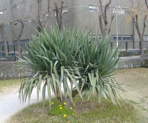
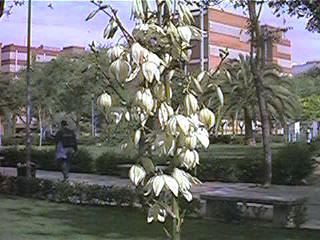

| Yucca
recurvifolia Salisb., Parad.
Lond. t. 31
(1806)
Y. gloriosa var. tristis Carrière |
Agaváceas |
| Yuca; bayoneta española (en América) | Arbusto perennifolio |
|
Arbusto perennifolio de aproximadamente 2 m de altura; tronco de 15-20 cm de diámetro, poco ramificado, cubierto con las cicatrices de las hojas caídas. Hojas dispuestas en roseta apical, sentadas; lámina de 60-80 x 4-5,5 cm, simple y entera, acintada, de base atenuada, acanalada hacia el ápice, ligeramente cóncava por el haz, recurvada, de color verde azulado, con una banda de color castaño en los márgenes, terminada en una punta de color negro. Inflorescencias en panícula apical. Flores 3,5-5 cm de longitud, hermafroditas, péndulas; periantio petaloideo, acampanado, con 6 tépalos de color crema; 6 estambres; ovario súpero, con tres carpelos. Florece entre Septiembre y Diciembre. Fruto
de tipo cápsula. El único individuo que hay en el
campus
florece en octubre y no ha fructificado. |
 Foto: Sara Gálvez Manzano, 2005 |
|
 Flores de Yucca sp. Foto: Carlos Romero Zarco, 1998 |
Observaciones.-
El nombre latino Yucca proviene del nombre caribeño dado a Manihot esculenta (Euphorbiaceae), la yuca comestible, de donde se obtienen la mandioca y la tapioca (1). Actualmente se tiende a considerarla como una variedad de Y. gloriosa, especie con la que puede confundirse fácilmente. |
| Área de Origen.- Nativa del sureste de EE.UU (1). | |
| Uso en el campus.- Un solo ejemplar como arbusto ornamental. |
Localización.- Zona
Central del
Campus: |
| (1) Las plantas del género Yucca cultivadas en España. http://www.arboles ornamentales.com/Yucca.htm | |
| Carlos Antonietty Adame (2005) & Carlos Romro Zarco (2006) | |